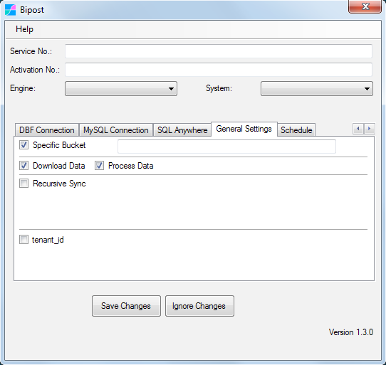
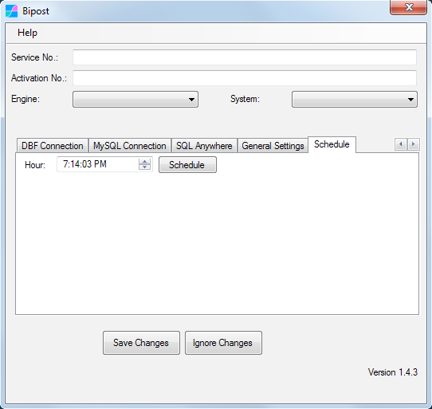
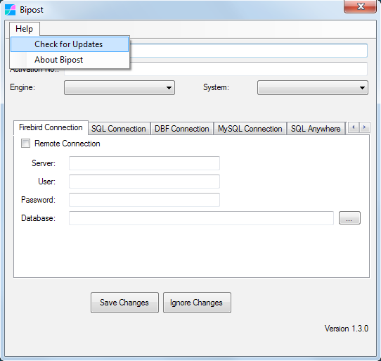
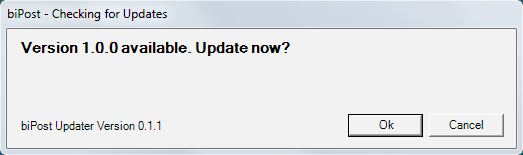

Synchronize Firebird to AWS¶
Continually export Firebird data to AWS Aurora MySQL.
- Great to consolidate/merge information on the cloud from multiple locations that use FirebirdSQL databases, then build your own Data Warehouse and deliver Business Intelligence.
- On top of AWS build web applications using data pulled from on-prem FirebirdSQL.
- Send data from AWS back to FirebirdSQL.
Before You Begin¶
- Have your AWS account linked it to our API. Not sure? follow here.
- Complete registration on Factor BI console
- Create Service and Activation keys and configure service, --> details here.
- Download Bipost Sync program for Windows.
Bipost Sync¶

- Service No.: 36 digit number, it may look like this:
a1bcd23e-4fa5-67b8-cd9e-f0123abc4567 - Activation No.: 24 digit number, it may look like this:
5990ab12c3de45f6a78bc90d - Engine:
Firebird - System:
Custom...
| Firebird Connection | ||
|---|---|---|
| Remote Connection | Leave unchecked | Enable ONLY when biPost.exe is not located on Firebird Server. |
| Server | Leave blank | Use ONLY when Remote Connection is enabled: Type IP or name of Firebird Server. |
| User | Firebird User | SYSDBA or other user with read access |
| Password | ||
| Database | Location of your .FDB file |
General Settings¶

Specific Bucket:¶
-
Enter your Bucket Name. It may look like this:
bipostdata-acb123456789012 -
It is available on your AWS Account \ CloudFormation Stack.
Download Data¶
-
Enable to download data from AWS Aurora to on-premises.
-
Downloaded data will be available on
%localappdata%/biPost/out_Windows folder. -
Update/insert data to Firebird by enabling Process Data check box.
-
More about downloading data check here --> Sync back to Windows

Recursive Sync¶
-
Use only to upload historic data. It optimizes upload by extracting and uploading one day at a time for a given date range.
-
Always use along with customData.json so you can configure the date field to use for each table.
-
NOTE: For daily sync, instead of using Recursive Sync, dynamically parse a date range into customData.json ==> Examples here.
-
More info about this feature see Recursive Synchronization
Tenant¶
-
This allows to sync several on-premise databases to a single Aurora-MySQL database and differentiate them with tenant_id. Great for consolidation!
-
Activate and type a string to add a fixed column to every table that is synced.
-
This fixed column will be included in the PRIMARY KEY on Aurora-MySQL.
Tables to Sync¶
IMPORTANT: Tables and subsets of data to synchronize are specified in customData.json file ==> follow here.
Schedule¶

If you want automated execution of Bipost Sync, then set the Hour desired and click Schedule.
This will create a Windows Task that will run daily. If you want a different schedule, then open Windows Task Scheduler as follows.
Control Panel \ Administrative Tools:

If you manually create a task to run biPost then use argument: post

Check for Updates¶
New versions of Bipost Sync can be checked using Help \ Check for Updates.


Sync multiple databases¶
If you are going to synchronize two or more databases from the same Windows host, create separate Bipost Sync folders for each database. Then customize each folder with the desired data set as explained here.
Use Cases¶
Many legacy and critical mission systems use Firebird SQL.
Microsip ERP and Aspel are examples of systems built with Firebird. We have companies that use Bipost Sync + AWS to achieve sales & financial consolidation and enable cloud Business Intelligence with Google Data Studio.
Contact Us¶
Questions? Send us an email: info@factorbi.com